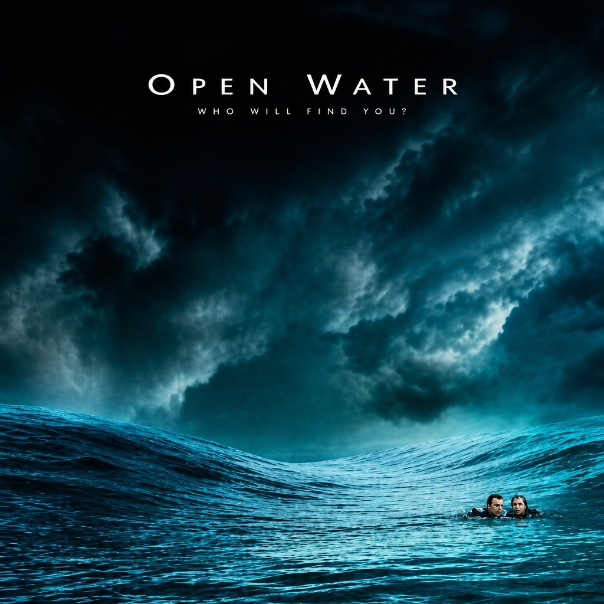
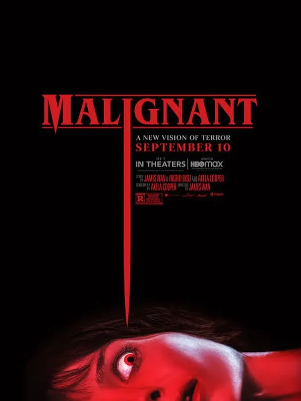

HORAMI
CINEMA
今夜の１本ガチャ
特集・ランキング
新作映画
映画診断
@dontlookback25
↗
EN ↗
☰
特集・ランキング
今夜の特集
逃げ場のない映画６選
海、密室、地上600メートル。どこなら耐えられる？
↗

ホラー・スリラー映画から各5本。同点は同順位で、最近の投稿から掲載。
ホラみのおすすめ順
1
呪詛
4.5/5
1
死霊館 悪魔のせいなら、無罪。
4.5/5
3
オキシジェン
4/5
3
スピーク・ノー・イーブル 異常な家族
4/5
3
Tu Yaa Main
4/5
ホラー度が高い順
1
グリーン・インフェルノ
5/5
2
呪詛
4.5/5
3
死霊館 悪魔のせいなら、無罪。
4/5
3
ジェーンドウの解剖
4/5

5
マリグナント 狂暴な悪夢
3.5/5
 1
1 1
1 3
3 1
1